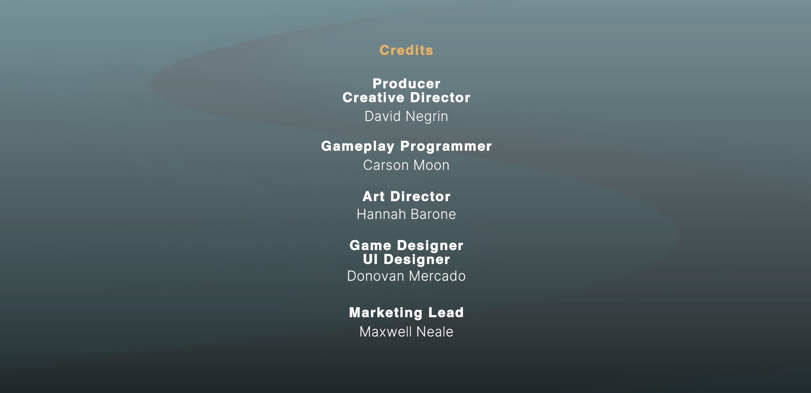

Casual mobile game about managing your mental health.
Ensemble Interactive (5 People)
January 2024 - August 2025
Lead Programmer
Unity
Wellness Hero started as a paper prototype and evolved into an app that gamifies the management of your mental health. Although still a WIP, programming Wellness Hero has been a journey through aspects of development I had previously not touched, such as Editor Debugs, CSV reading, and FTUE Analytics.
The main view.
Various systems at work.
Showcase of additional contributions.
Wellness Hero is a project that could have benefited from how much knowledge I have of backend systems now compared to back then. Most of my experience leading up to Wellness Hero was in programming for more gameplay-oriented systems, and it took a lot of effort for me to see the value in some of the tools that we were eventually thankful for. Nowadays, I have made leaps in my ability to determine if we need a tool, what that tool should do, and how someone should interact with that tool to make their life as easy as possible.
I would love to create something with the mission to impact the player positively like Wellness Hero again.
